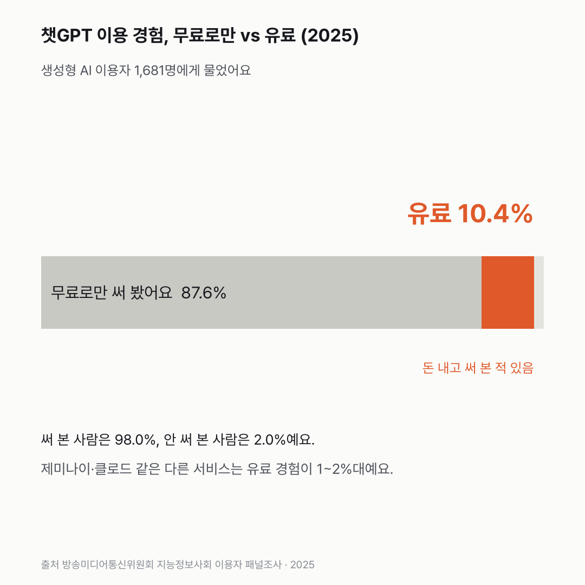
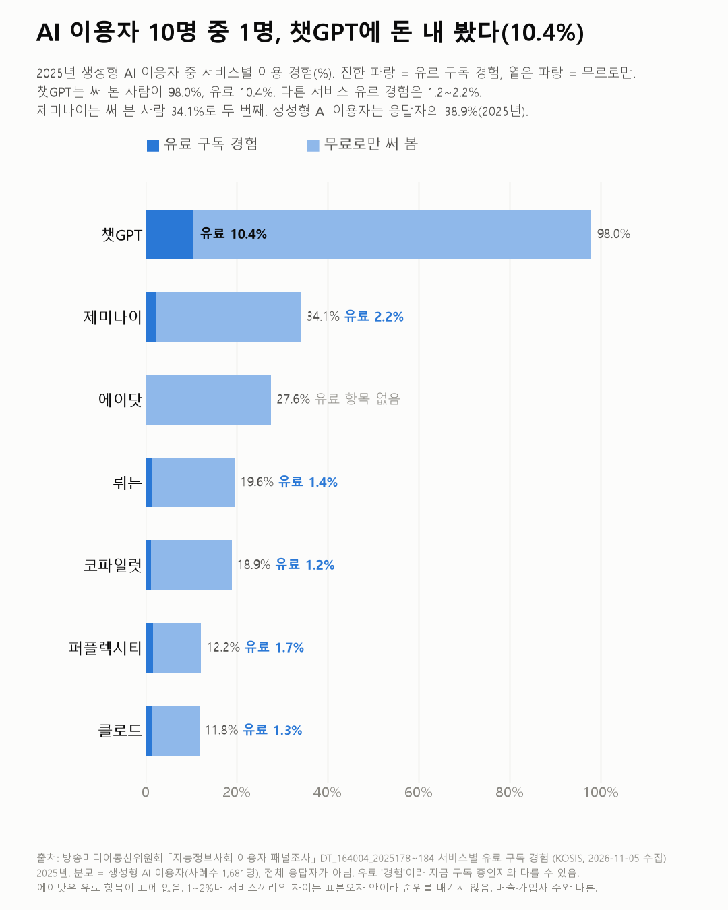
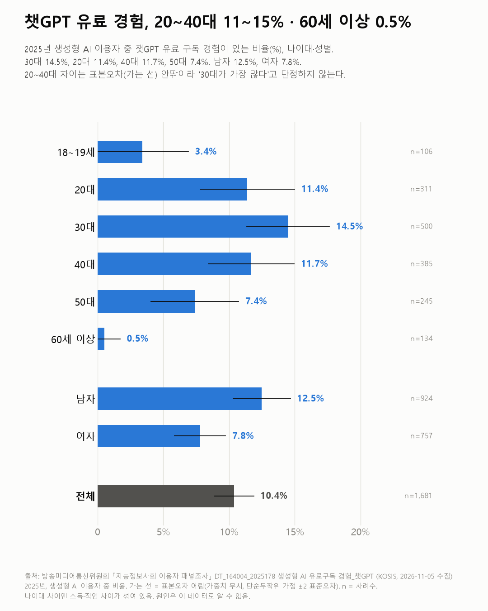

생성형 AI 쓰는 사람 열에 하나만 챗GPT에 돈을 내 봤어요
챗GPT를 써 본 사람은 거의 전부인데, 대부분은 무료로만 썼어요. 돈을 내 본 경험은 20~40대에 몰려 있어요.

- 2025년 생성형 AI 이용자 중 98.0%가 챗GPT를 써 봤고, 돈을 내고 써 본 사람은 10.4%예요.
- 제미나이·클로드 같은 다른 서비스는 유료 경험이 1.2~2.2%예요.
- 나이로 보면 30대는 14.5%가 챗GPT에 돈을 내 봤고, 60세 이상은 0.5%예요.
87.6%. 생성형 AI 이용자 가운데 챗GPT를 무료로만 써 본 사람이에요. 조사에 답한 2025년 이용자 1,681명 중 챗GPT를 아예 안 써 본 사람은 2.0%뿐이었고, 돈을 내 본 사람은 10.4%예요. 거의 다 써 본 서비스인데, 돈을 낸 비율은 예상보다 작았어요.
다른 서비스는 더 적어요. 제미나이 2.2%, 퍼플렉시티 1.7%, 뤼튼 1.4%, 클로드 1.3%, 코파일럿 1.2%. 이 사이 차이는 조사 오차(약 ±0.6%p) 안팎이라 순위를 매기진 않았어요. 써 본 비율로는 제미나이가 34.1%로 챗GPT 다음이에요.


나이로 나눠 보니 20~40대가 많이 내 봤어요. 챗GPT 유료 경험은 30대 14.5%, 40대 11.7%, 20대 11.4%예요. 50대는 7.4%, 60세 이상은 0.5%. 20~40대끼리의 차이는 조사 오차 안팎이에요. 남자는 12.5%, 여자는 7.8%예요.


2023년엔 유료로 쓰는 사람이 거의 없었어요. 어떤 서비스든 유료로 쓴다는 사람이 2023년엔 0.9%, 2024년엔 7.0%였어요. 물론 해마다 묻는 방식이 달라서 2025년 숫자와 한 줄로 잇지는 않았어요.
무료로만 쓴 87.6%는 어떤 순간에 돈을 내게 될까요? 이 조사엔 아직 그 질문이 없었어요.
이 숫자는 어디서 왔나요
출처
어떻게 셌나요
- 스마트폰을 쓰고 하루 1번 이상 인터넷을 쓰는 만 18~72세를 조사해요. 2025년엔 4,324명이고, 그중 38.9%가 생성형 AI 이용자예요(보도).
- 비율은 생성형 AI 이용자 가운데서 셌어요. 2025년 1,681명, 2024년 1,062명, 2023년 563명이에요. 전체 응답자로 나눈 값은 아니에요.
- 2025년엔 서비스마다 '안 써 봄, 무료로만, 유료 경험' 중 하나를 골라요. 챗GPT를 써 본 비율 98.0%는 무료로만 87.6%와 유료 경험 10.4%를 더한 값이에요.
- 해마다 묻는 방식이 달라요. 2023년은 '어떤 서비스를 유료로 쓰나(없음 포함)', 2024년은 '유료 구독 있음/없음'을 물었어요. 그래서 2025년의 '어떤 서비스든 유료' 비율은 이 표로 낼 수 없고, 해를 한 선으로 잇지 않았어요.
- '기타' 서비스는 응답자가 5명뿐이라 쓰지 않았어요. 에이닷은 유료 항목이 표에 없어요.
한계 4가지
이 데이터로 말할 수 없는 것
- 유료 '경험'이에요. 지금 구독 중인지, 한 달에 얼마 내는지는 알 수 없어요. 회사 쪽 가입자·매출 숫자와 달라요.
- 표본조사예요. 나이대별 응답자가 106~500명이라 몇 %p 차이는 해석하지 않았어요. 나이대별 차트의 오차선은 가중치를 무시한 어림값이에요.
- 특정 서비스를 추천하거나 평가하지 않아요. 다른 조사(과기정통부 인터넷이용실태조사, 유료 7.9%)는 대상·문항이 달라 섞지 않았어요.
- 생성형 AI 이용 경험 전체 흐름은 생성형 AI 이용 글에서 다뤘어요.
새 글 나오면 받아 보기
피드 리더 앱에 이 사이트 주소를 한 번 넣어 두면, 새 글이 올라올 때 앱에 떠요. 가입이나 메일 주소는 필요 없어요.
받는 법 보기
- 피드 리더 앱을 하나 골라요. 새 글을 모아 보여 주는 앱이에요. 예를 들면 Feedly나 Inoreader가 있어요. 둘 다 무료고 웹·휴대폰에서 써요.
- 앱에서 '구독 추가'(+)를 누르고 아래 주소를 붙여 넣어요.
- 끝이에요. 새 글이 올라오면 앱 목록에 떠요.
https://protofu.github.io/opendata-insight/feed.xmlFeedly를 쓴다면 여기를 눌러 바로 추가할 수도 있어요.